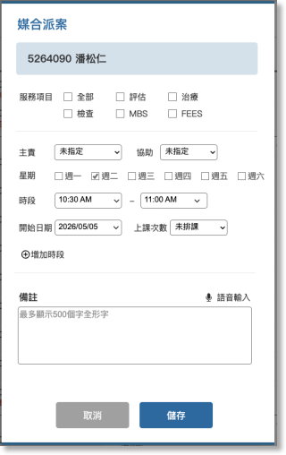

02-3-4 媒合派案

項目

內容

說明

病人待排資訊

病歷號及姓名
帶入由”02-3-2 治療師單一時段記事(閒置或保留)”輸入病歷號或姓名媒合的門診待排病人病歷及姓名。

待排服務項目

多選項

預設帶入該病人在門診待排中有哪幾項服務未派案
- 評估
- 治療
- 檢查
- MBS
- FEES
派案資訊

主責及協助治療師

下拉選項，顯示”05-1 人員管理"中角色為語言治療師的人員姓名。


星期

多選項，週一～週六可指定多天。

時段

時間元件，設定媒合課程每次的起迄時間，30分鐘為一個刻度，若每堂超過半小時，課表看版會在相連的時間刻度中顯示相同資訊的任務小卡片。
開始日期
日曆元件，可選擇含當天之後的日期。


上課次數

下拉選項
- 未選課
- 1
- 2
- 6
- 12
- 24
增加時段
按＋往下新增一組含星期、時段區間、開始日期的填寫欄位。
課表備註
多行文字框
文字輸入框，最多可輸入500個全形文字，可語音輸入轉文字。
